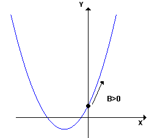

Coeficiente "b"
Numa equação função do 2°grau o "b" é o coeficiente de x, quando b=0 esta se torna
(ax² + c = 0)
.
Em uma função, análise do coeficiente "b" diz a inclinação que a parábola toma após passar o eixo Y.
(b < 0)
:
Seguindo a parábola para direita a partir do ponto de corte do eixo Y, ira descer.

(b > 0)
:
Seguindo a parábola para direita a partir do ponto de corte do eixo Y, ira subir.
(b = 0)
:
Pois logo após o ponto de corte, iremos reto.